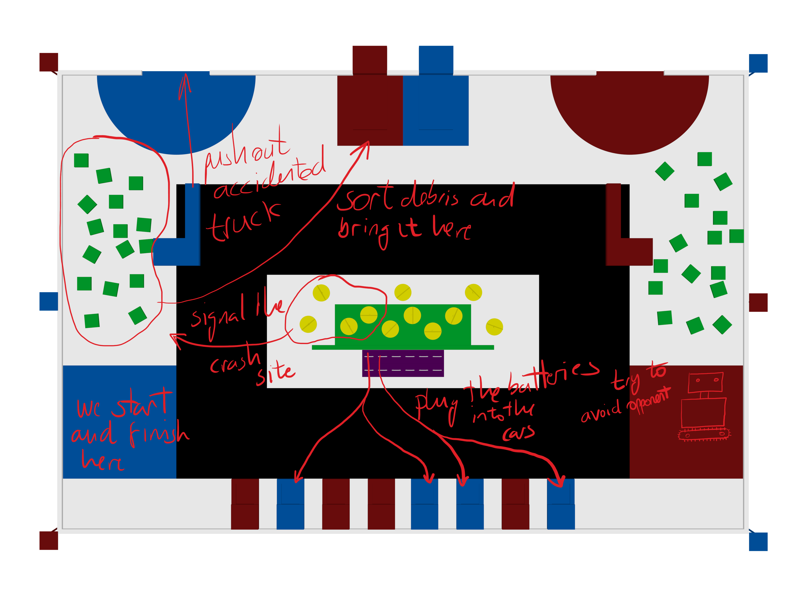

Utopian Robotics
We think challenges make learning more fun and productive, so we decided to build a robot and join a competition.
Who we are
We are a multidisciplinary group of students, majoring in Business Administration, Computer Science and Automation Engineering (a.k.a. putos amos del universo), from the University of Alcala in Spain.
Gonzalo
As an Electronic and Industrial Automation student I always wanted to do my final dissertation in the robotic field and I think that participating in this contest is a great opportunity to challenge ourselves. I am in charged of Alan's little robotics arms.
Miguel
Electronic and Industrial Automation student. I’m a control theory lover in my last degree year. I wanted my thesis to be about electronic control to combine two of my passions. And, here I am, being in charge of Alan’s motors and trayectories control, making it go whereever it wants.
Sofia
Bussines management student. I'm interested in economics and negotiation skills. That's why I'm the one in charge of securing the budget!
Rodrigo
Phasellus convallis elit id ullam corper amet et pulvinar. Duis aliquam turpis mauris, sed ultricies erat dapibus.
Mario
Computer scientist. I'm fascinated by Artificial Intelligence, and robots are cool, so here I am, developing Alan's computer vision and decision making algorithms.
Alan
Phasellus convallis elit id ullam corper amet et pulvinar. Duis aliquam turpis mauris, sed ultricies erat dapibus.
What we do
We liked the idea of challenging ourselves and working on something real, so we decided to join the Robotic Day 2017 competition in Prague. The rules are very similar to those of Eurobot: We must solve three tasks faster than our oponent and in no more than 128 seconds. This year's competition is road assistance themed, so our robot, Alan, will be getting rid of road debris, signaling accidented areas and resupplying electric cars with their batteries! All this while keeping a fair play, of course.
 Some of our key aspects
6 DOF robotic arm
For one of the tasks, we must pile up 16 boxex. We are building two robotic arms that will coordinate to pick them.
Computer Vision
What use does a robotic arm have if it doesn't know what to pick? We are designing a robust computer vision algorithm, capable of detecting the position and orientation of boxes.
ROS powered
We don't want to reinvent the wheel. ROS is a powerful framework, that help us communicate sensors and actuators with our logic and algorithms. By using ROS, we save time and effort, and ensure we follow good design practices.

Sensor fusion
In order for our algorithms to work, we need to know our location at all times. But we have more than one location estimation sensor. We will be using a kalman filter to give a weighted estimation of our position.
6 DOF robotic arm
For one of the tasks, we must pile up 16 boxex. We are building two robotic arms that will coordinate to pick them.
Computer Vision
What use does a robotic arm have if it doesn't know what to pick? We are designing a robust computer vision algorithm, capable of detecting the position and orientation of boxes.
ROS powered
We don't want to reinvent the wheel. ROS is a powerful framework, that help us communicate sensors and actuators with our logic and algorithms. By using ROS, we save time and effort, and ensure we follow good design practices.
Sensor fusion
In order for our algorithms to work, we need to know our location at all times. But we have more than one location estimation sensor. We will be using a kalman filter to give a weighted estimation of our position.
Get in touch
If you are interested in sponsoring us, or you are comming across a similar project and want to share some experiences, don't hesitate, let us know!
-
Address
Campus Universitario, Ctra. Madrid-Barcelona, Km. 33,600
28805 Alcalá de Henares, Madrid
Spain -
Email
utopianrobotics@gmail.com -
Follow us on twitter